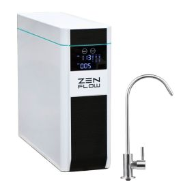

Direct Flow RO
Wasserhaus ZEN FLOW
Tankloses ZEN FLOW Direct-Flow-Umkehrosmosesystem, das Reinwasser bei der Entnahme produziert.
Preis auf Anfrage
Technische Daten
| Preis | 1.199 € (Herstellerseite bei Recherche) |
| Bauart | Tankloses Direct-Flow-Unterbaugerät |
| Membran | 800 GPD |
| Durchfluss | bis ca. 2,1 L/min unter optimalen Bedingungen |
| Reinwasser/Abwasser | ca. 1:1 |
| Filtration | Vorfilter, RO-Membran und Aktivkohle-Nachfilter |
| Remineralisierung | Magnesium, Kalium und Calcium |
| Wasserveredelung | ZENERGIZER Edelstahl-Wasserwirbler |
| Hygiene | Automatische Spülung alle 24 Stunden |
| Sicherheit | LED-Anzeige, Filterwechselhinweis und elektronischer Leckageschutz |
| Montage | Stehend oder liegend im Küchenschrank, in geeigneter Schublade oder Sockel |
| Armatur | INOX-Edelstahl-Osmosehahn enthalten; 3-Wege-Armaturen optional |
| Vorratstank | Nein |
Datenhinweis
Die Angaben stammen aus öffentlich zugänglichen Hersteller- und Produktunterlagen. Nicht veröffentlichte Werte wurden nicht geschätzt. Änderungen und Modellvarianten sind möglich.
Technologie und Wasserwissen
Diese Ratgeber erklären die eingesetzten Verfahren, Messwerte und Grenzen unabhängig von einzelnen Herstellerangaben.
- Umkehrosmose: Funktion und Filterleistung
- TDS im Wasser richtig einordnen
- Aktivkohlefilter richtig einsetzen
Wasserwissen entdecken · Alle Filtertechnologien · Produkte vergleichen